Entry
The event unlocks at 4,000 stars, just above the typical Day 30 range of 1,000 to 3,000, so it reads as a near-term milestone. A new icon on the main screen's side rail glows whenever the player has unused Scanner Points.
A live-ops event concept for Coin Master: a daily minefield mini-game that gets veteran players to stay longer per visit.
Coin Master players past Day 30 open the game 7.6 times a day, but each visit lasts only about four minutes. Treasure Scan is a live-ops event I designed to make those visits longer and more deliberate, without asking players to open the app more often.
The event sits on top of the existing loop. Every slot spin earns a Scanner Point. Players spend points to scan tiles on a minefield board, read colour clues, and find reward caches before they hit a mine. I wrote the event one-pager and the UI spec, set the art direction, and built a playable prototype.
Student concept made for the Design Management course at the National Institute of Design. Not affiliated with, or endorsed by, Moon Active. Coin Master and its characters belong to Moon Active. KPI values are targets, not results.
The prototype starts on a stand-in Coin Master main screen, already set up for testing at 3,960 ★, just under the 4,000 ★ unlock. Your first spin unlocks the event; tap its icon to open the briefing and the sector map. Each spin also banks a Scanner Point to spend on the board.
Click on the spin button to start the event.
Veterans (players past Day 30) are 31% of daily active users, about 174,000 players a day. They play around 30 minutes a day, but in very small bites. The goal was longer visits, not more of them: give veterans a reason to linger, not a reason to open the app more often.
Every slot spin banks 1 Scanner Point, whatever the result
Spend a point to reveal one tile on the board
A cache is banked; a mine restarts the sector
Bank every cache to open the next sector
“I hope I find the right rewards.”
“I hope I don't click on a bomb tile.”
The player fantasy: every tap is a small bet, so even a 30 to 60 second session feels charged, through anticipation (what's under the tile?) and loss aversion (don't lose the run).
The event unlocks at 4,000 stars, just above the typical Day 30 range of 1,000 to 3,000, so it reads as a near-term milestone. A new icon on the main screen's side rail glows whenever the player has unused Scanner Points.
There is no offer to buy Scanner Points. A player who wants to push further, faster has to spin more, which routes the pinch back to the game's existing energy purchases and keeps the mini-game itself feeling fair.
The event runs on a 24-hour timer with a live countdown on the sector map, so urgency is visible without push notifications. Clearing every sector, or running out of time, starts a cooldown before the event can trigger again.
Unlock poster, then a one-time briefing, then the sector map, then the board, with pop-ups for each outcome. The briefing appears on the first visit; after that, the event icon jumps straight to the sector map.
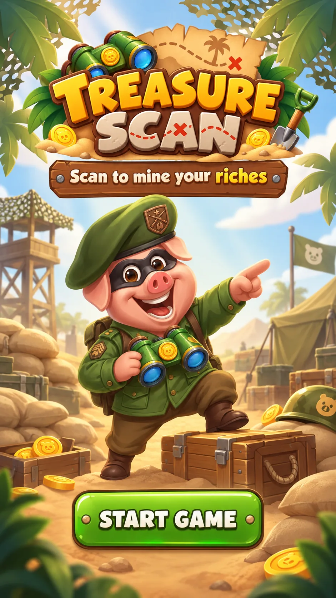
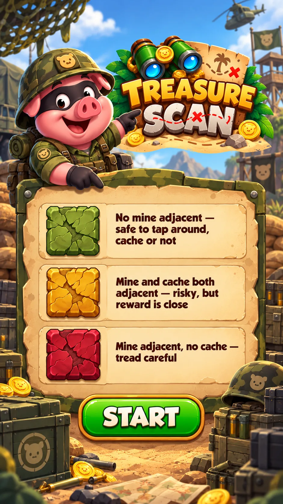
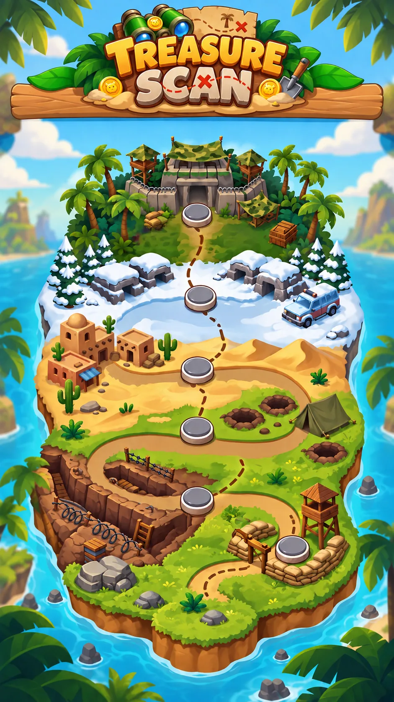
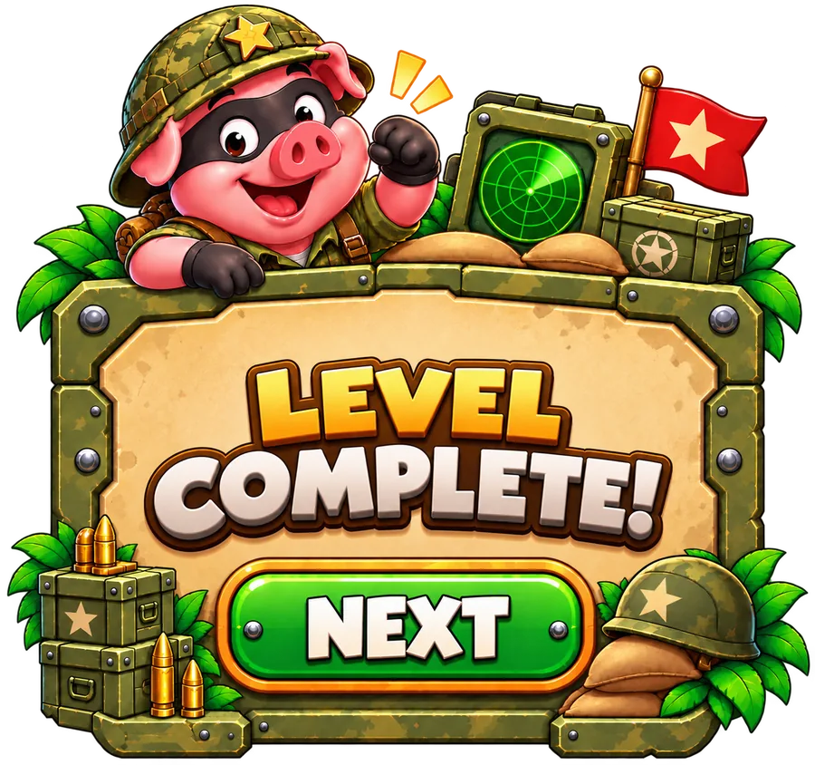
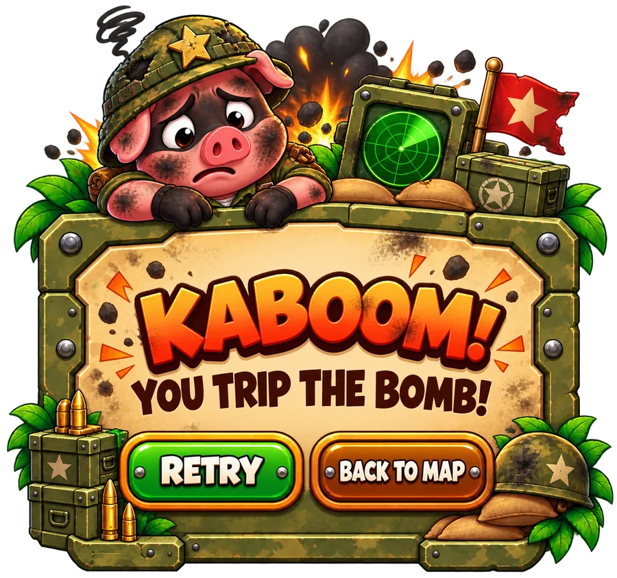
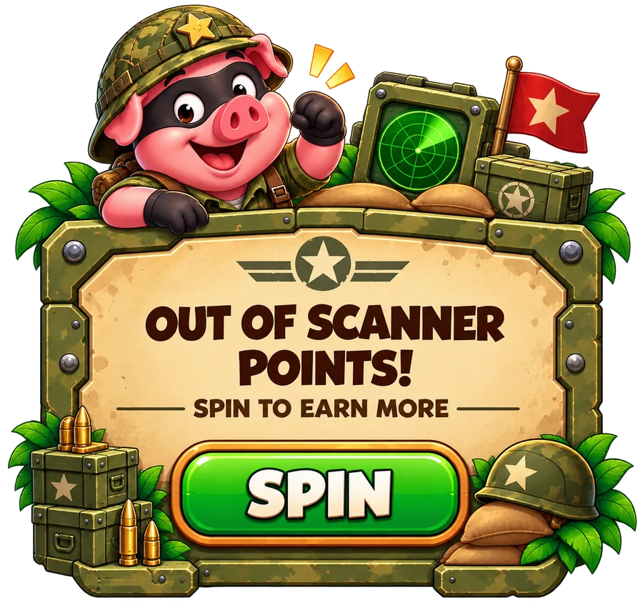
Instead of Minesweeper numbers, every safe tile shows one of three colours, so the board can be read at a glance. A green tile means every tile next to it is safe to tap.
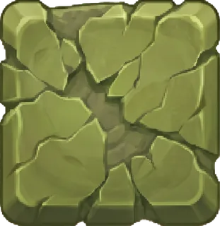
No mine next to it, so every neighbour is safe to tap, cache or not.
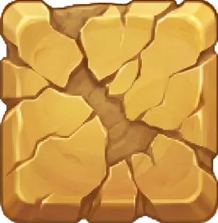
A mine and a cache are both next to it: risky, but a reward is close.
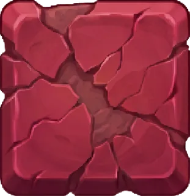
A mine is next to it, and no cache. Tread carefully.
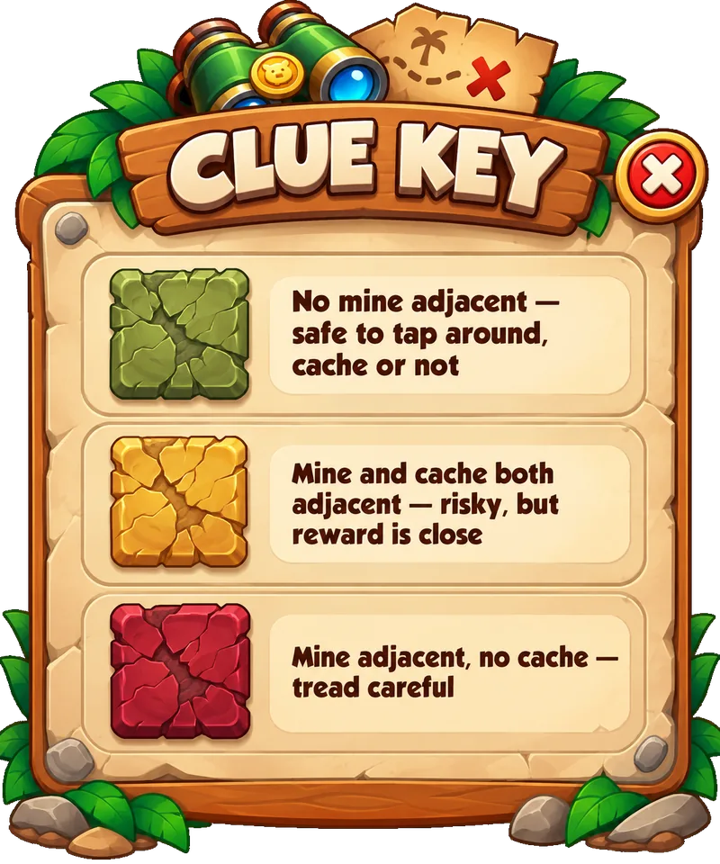
Each sector is a new battleground on the map. Caches and mines both climb by one per sector, from a safe, mine-free opener to a six-cache, five-mine finale. Clearing every sector pays out 345 spins in total.
| Sector | Grid | Mines | Caches (spins) | Total |
|---|---|---|---|---|
| 1 · Sandbag Ridge | 3 × 3 | 0 | 5 | 5 |
| 2 · Trench Line | 4 × 4 | 1 | 5, 10 | 15 |
| 3 · Foxhole Flats | 4 × 4 | 2 | 10, 10, 15 | 35 |
| 4 · Desert Outpost | 6 × 6 | 3 | 10, 15, 15, 20 | 60 |
| 5 · Snowline Front | 6 × 6 | 4 | 15, 15, 20, 20, 25 | 95 |
| 6 · Jungle HQ Assault | 6 × 6 | 5 | 15, 20, 20, 25, 25, 30 | 135 |
The one-pager and the UI spec disagreed in places and left some questions open. Building the prototype settled them, and showed that the first level needed to be risk-free.
| Question | One-pager | UI spec | Prototype |
|---|---|---|---|
| Number of levels | 6 levels | 5 levels | 6 sectors |
| First level | 4 × 4 grid with 2 mines | — | 3 × 3 grid with no mines, so the first run teaches without punishing |
| Win condition | Clear all the safe tiles | Tap the reward tile | Bank every cache before you hit a mine |
| Clues | Safe tiles reveal rewards | A Minesweeper-style clue on each tile | Three colours: green, yellow, red |
| Hitting a mine | Run over, the level restarts | Loss pop-up with Retry | The sector restarts, but caches already found stay banked |
A military theme starring the Coin Master pig as a battlefield scout, kept bright and casual rather than gritty, and following the game's existing reward and chest language. Safe and danger tiles read instantly without text.
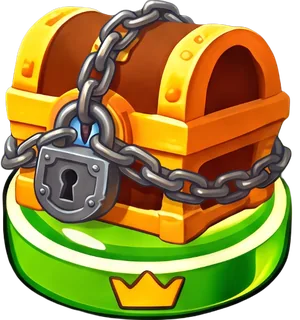
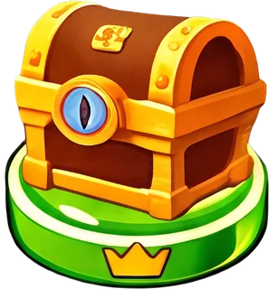
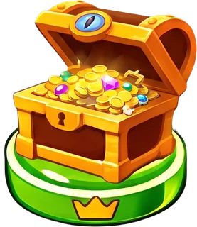
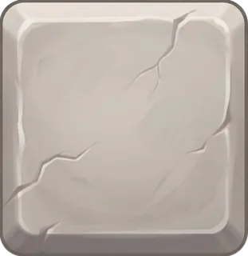
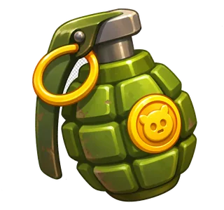
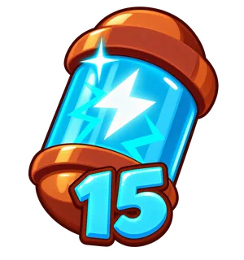